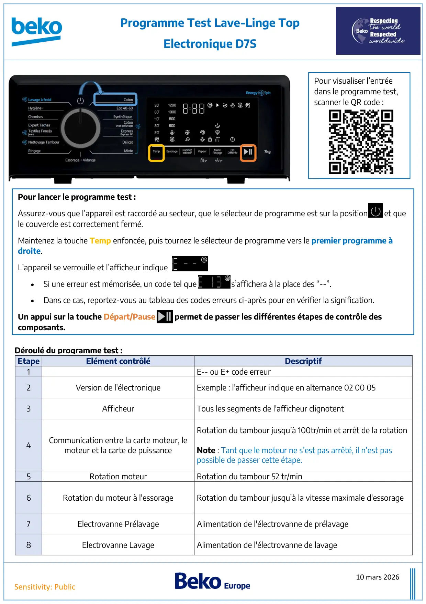
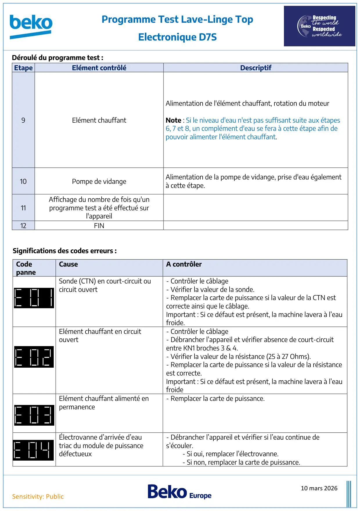
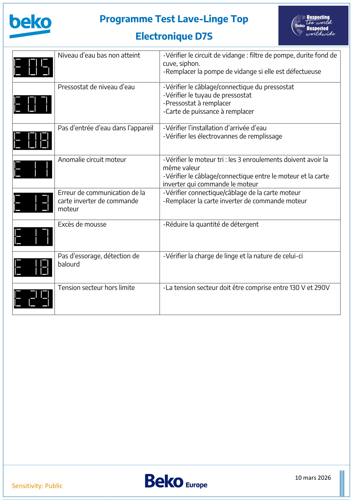

ProgTest lave linge Top Electronique D7S

10 mars 2026Sensitivity: PublicProgramme Test Lave-Linge TopElectronique D7SEtapeElément contrôléDescriptif1E-- ou E+ code erreur2Version de l'électroniqueExemple : l'afficheur indique en alternance 02 00 053AfficheurTous les segments de l'afficheur clignotent4Communication entre la carte moteur, lemoteur et la carte de puissanceRotation du tambour jusqu’à 100tr/min et arrêt de la rotationNote : Tant que le moteur ne s’est pas arrêté, il n’est paspossible de passer cette étape.5Rotation moteurRotation du tambour 52 tr/min6Rotation du moteur à l'essorageRotation du tambour jusqu’à la vitesse maximale d'essorage7Electrovanne PrélavageAlimentation de l'électrovanne de prélavage8Electrovanne LavageAlimentation de l'électrovanne de lavagePour lancer le programme test :Assurez-vous que l’appareil est raccordé au secteur, que le sélecteur de programme est sur la position Off et quele couvercle est correctement fermé.Maintenez la touche Temp enfoncée, puis tournez le sélecteur de programme vers le premier programme àdroite.L’appareil se verrouille et l’afficheur indique•Si une erreur est mémorisée, un code tel que s’affichera à la place des “--”.•Dans ce cas, reportez-vous au tableau des codes erreurs ci-après pour en vérifier la signification.Un appui sur la touche Départ/Pause permet de passer les différentes étapes de contrôle descomposants.Déroulé du programme test :Pour visualiser l’entréedans le programme test,scanner le QR code :
1 / 3
10 mars 2026Sensitivity: PublicProgramme Test Lave-Linge TopElectronique D7SCodepanneCauseA contrôlerSonde (CTN) en court-circuit oucircuit ouvert- Contrôler le câblage- Vérifier la valeur de la sonde.- Remplacer la carte de puissance si la valeur de la CTN estcorrecte ainsi que le câblage.Important : Si ce défaut est présent, la machine lavera à l’eaufroide.Elément chauffant en circuitouvert- Contrôler le câblage- Débrancher l’appareil et vérifier absence de court-circuitentre KN1 broches 3 & 4.- Vérifier la valeur de la résistance (25 à 27 Ohms).- Remplacer la carte de puissance si la valeur de la résistanceest correcte.Important : Si ce défaut est présent, la machine lavera à l’eaufroideElément chauffant alimenté enpermanence- Remplacer la carte de puissance.Électrovanne d’arrivée d’eautriac du module de puissancedéfectueux- Débrancher l’appareil et vérifier si l’eau continue des’écouler.- Si oui, remplacer l’électrovanne.- Si non, remplacer la carte de puissance.EtapeElément contrôléDescriptif9Elément chauffantAlimentation de l'élément chauffant, rotation du moteurNote : Si le niveau d'eau n'est pas suffisant suite aux étapes6, 7 et 8, un complément d'eau se fera à cette étape afin depouvoir alimenter l'élément chauffant.10Pompe de vidangeAlimentation de la pompe de vidange, prise d'eau égalementà cette étape.11Affichage du nombre de fois qu'unprogramme test a été effectué surl'appareil12FINDéroulé du programme test :Significations des codes erreurs :
2 / 3
10 mars 2026Sensitivity: PublicProgramme Test Lave-Linge TopElectronique D7SNiveau d’eau bas non atteint-Vérifier le circuit de vidange : filtre de pompe, durite fond decuve, siphon.-Remplacer la pompe de vidange si elle est défectueusePressostat de niveau d’eau-Vérifier le câblage/connectique du pressostat-Vérifier le tuyau de pressostat-Pressostat à remplacer-Carte de puissance à remplacerPas d’entrée d’eau dans l’appareil-Vérifier l’installation d’arrivée d’eau-Vérifier les électrovannes de remplissageAnomalie circuit moteur-Vérifier le moteur tri : les 3 enroulements doivent avoir lamême valeur-Vérifier le câblage/connectique entre le moteur et la carteinverter qui commande le moteurErreur de communication de lacarte inverter de commandemoteur-Vérifier connectique/câblage de la carte moteur-Remplacer la carte inverter de commande moteurExcès de mousse-Réduire la quantité de détergentPas d’essorage, détection debalourd-Vérifier la charge de linge et la nature de celui-ciTension secteur hors limite-La tension secteur doit être comprise entre 130 V et 290V
3 / 3